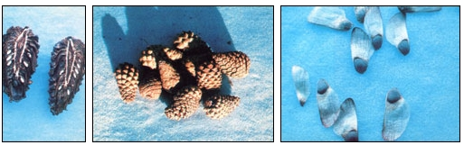

PHOTOS BY THE AUTHOR
This ponderosa pine's white seeds are mature, so the cone is ripe for collecting and selling. . . A batch of newly picked cones from lodgepole pine. . . . An example of what the ponderosa pine's seed look like after the cone opens to release them.